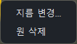
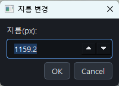
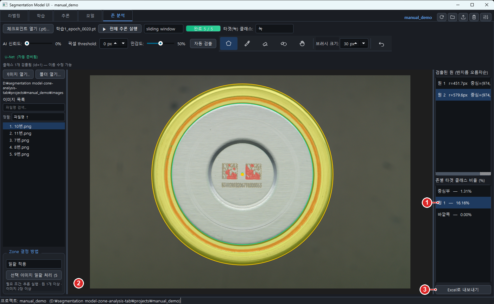
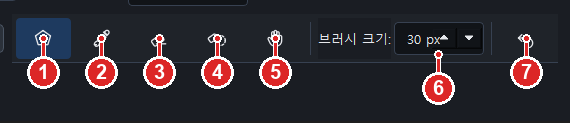
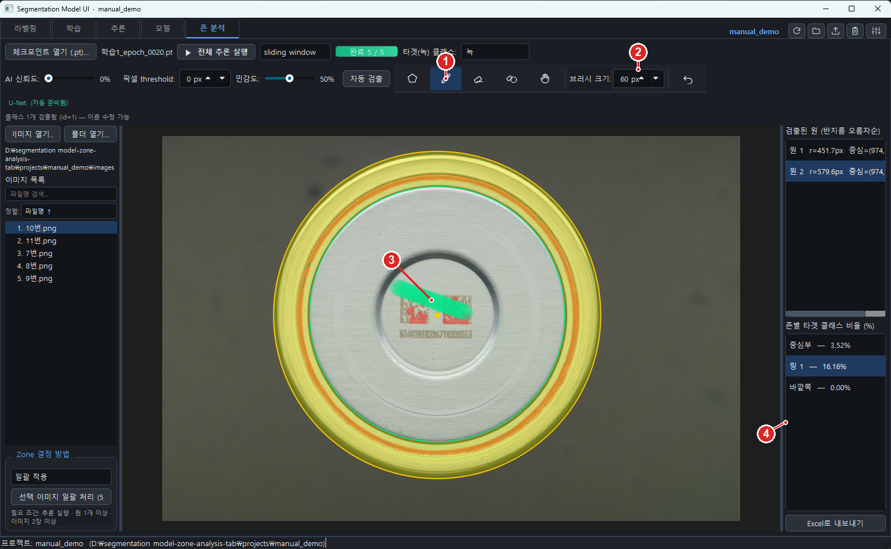
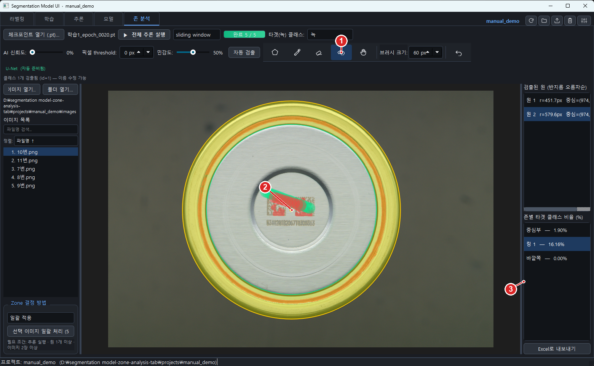
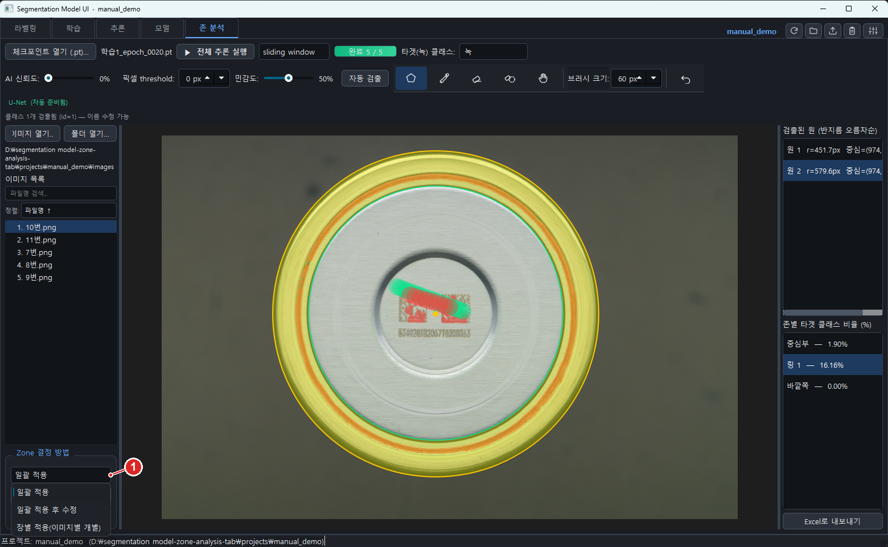
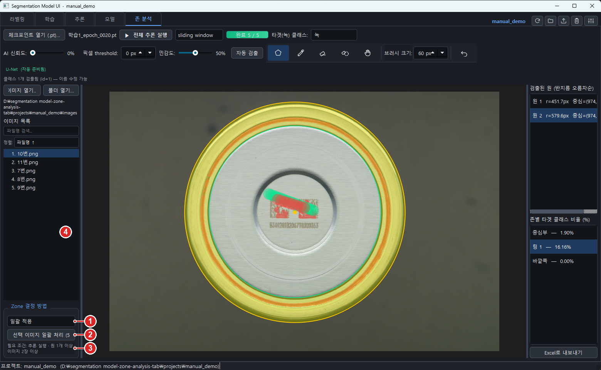
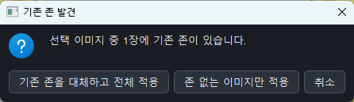
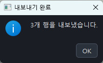

빈 곳에서 바깥쪽으로 드래그. (이미 원이 있으면 중심은 기존 원들의 평균 중심으로 자동 맞춤)
원 옮기기
원의 중심점을 드래그
크기 바꾸기
원의 테두리를 드래그
정확한 숫자로 크기 지정
원 위에서 우클릭 → 지름 변경…
원 지우기
원 위에서 우클릭 → 원 삭제, 또는 선택 후 Delete
되돌리기
Ctrl+Z 또는 도구 모음의 실행 취소

원 위에서 우클릭하면 나오는 메뉴

지름 변경…을 고르면 지름(px)을 숫자로 직접 입력할 수 있습니다 — 반지름이 아니라 지름입니다
8.8 7단계 · 존별 비율 확인하기

존 목록에서 한 줄을 클릭하면 그 존이 캔버스에서 노랗게 칠해집니다
①존 목록 — 링 1 — 16.16% 처럼 존 이름과 녹 비율이 나옵니다.
② 선택한 존이 캔버스에서 노란색으로 강조됩니다. 반대로 캔버스의 빈 곳을 클릭해도 그 위치의 존이 선택됩니다.
③Excel로 내보내기 — 지금 화면의 존 목록(사진 1장)을 xlsx로 저장합니다.
8.9 8단계 · 편집 도구 5종
AI 결과가 완벽하진 않습니다. 잘못 잡힌 곳을 지우거나 빠진 곳을 채우는 도구가 있습니다.
다섯 개 중 항상 하나만 켜집니다.

존 분석 탭의 편집 도구 모음
①원 편집 — 원을 만들고 옮기고 크기를 바꿉니다(기본 상태).
②브러시로 타겟 영역 그리기 — AI가 놓친 녹을 직접 칠해서 넣습니다(초록색).
③브러시로 타겟 영역 지우기 — 잘못 잡힌 부분을 문질러 지웁니다(빨간색).
④클릭한 연결 블랍 삭제 — 이어져 있는 덩어리 하나를 클릭 한 번으로 통째로 뺍니다.
⑤화면 이동 — 그림을 끌어서 옮깁니다.
⑥브러시 크기 — ②③에서 쓰는 붓 굵기(원본 사진 픽셀 기준).
⑦실행 취소 — 원 편집·그리기·지우기·블랍 삭제를 시간 순서대로 되돌립니다(Ctrl+Z).
브러시로 그리기

브러시로 칠한 부분(초록)이 “녹”으로 추가되고 존별 % 가 다시 계산됩니다
①브러시 그리기 도구를 켭니다.
②브러시 크기를 정합니다.
③ 캔버스에서 드래그하면 초록색으로 칠해집니다.
④ 손을 떼는 순간 존별 비율이 다시 계산됩니다.
브러시로 지우기
지운 부분은 붉은색으로 표시됩니다
①브러시 지우기 도구를 켭니다.
② 지울 곳을 드래그합니다.
③ 잘못 지웠으면 실행 취소(Ctrl+Z).
블랍(덩어리) 삭제

블랍 삭제 도구를 켜고, 없앨 덩어리를 클릭합니다
①블랍 삭제 도구를 켭니다.
② 없앨 덩어리를 클릭합니다.
③ 현재 존별 비율.
클릭 한 번으로 이어진 덩어리 전체가 빠집니다
① 삭제된 덩어리는 붉은 사각형으로 표시됩니다.
② 존별 비율이 그만큼 줄어든 것을 확인하세요.
③ 되돌리려면 실행 취소.
8.10 9단계 · 이미지별 자동 저장
존 분석 탭에서 한 작업(원 위치, 지운 덩어리, 브러시 자국)은 사진마다 자동으로 저장됩니다.
저장 위치는 사진 파일 바로 옆의 사진이름.zone.json 파일입니다.
다른 사진을 봤다가 돌아오면 하던 작업이 그대로 복원됩니다. 따로 저장 버튼을 누를 필요가 없습니다.
단, 사진의 원본 자체는 건드리지 않습니다. 편집 내용을 완전히 지우고 싶으면
해당 .zone.json 파일을 지우면 됩니다.
8.11 10단계 · Zone 결정 방법 3가지와 일괄 처리
사진이 여러 장일 때, 원을 어떻게 정할지를 고르는 곳입니다.

왼쪽 아래 Zone 결정 방법 드롭다운을 펼친 모습
모드
어떻게 동작하나
언제 쓰나
일괄 적용
지금 화면(기준 사진)의 원을 나머지 사진 전부에 그대로 적용합니다(사진 크기가 다르면 비율에 맞춰 조정).
같은 위치·같은 카메라로 찍어 캡 위치가 일정할 때 — 가장 빠릅니다.
일괄 적용 후 수정
위와 같이 적용한 뒤, 사진을 하나씩 열어 원을 직접 손볼 수 있습니다(수정 내용은 자동 저장).
대체로 위치는 같지만 몇 장은 틀어져 있을 때.
장별 적용(이미지별 개별)
사진마다 따로 자동 검출을 돌립니다(민감도 슬라이더 값 사용).
사진마다 캡 위치·크기가 제각각일 때.

일괄 처리 조작부
①Zone 결정 방법 — 위 표에서 고릅니다.
②선택 이미지 일괄 처리 (N장) — 누르면 처리가 시작됩니다. 괄호 안 숫자가 대상 장수입니다.
③필요 조건 안내 — 추론 실행 + 원 1개 이상 + 이미지 2장 이상이어야 버튼이 켜집니다.
④이미지 목록 — Ctrl/Shift로 일부만 골라 처리할 수도 있습니다.
이미지 목록에서 딱 1장만 고른 경우에는 목록 전체가 처리됩니다.
한 장만 확인하고 싶으면 그 사진을 클릭해 캔버스에서 직접 보세요.

이미 존이 저장돼 있는 사진이 있으면 이렇게 물어봅니다
기존 존을 대체하고 전체 적용 — 저장돼 있던 원을 새 기준으로 덮어씁니다.
존 없는 이미지만 적용 — 이미 작업한 사진은 그대로 두고 나머지만 처리합니다.
취소 — 아무것도 하지 않습니다.
처리 중 화면 — 시작하면 3 / 12 사진이름.png 처럼 진행 상황을 보여 주는 작은 창이 뜹니다.
취소를 누르면 중간에 멈출 수 있고, 그때까지 처리된 결과는 그대로 표로 나옵니다.
왼쪽 이미지 목록에도 사진마다 처리 상태와 마지막 존의 비율이 표시됩니다.
이미 추론이 끝난 사진은 결과를 다시 쓰기 때문에 몇 장이면 순식간에 끝납니다.
이미지별(Wide) 보기 — 사진마다 존 개수가 다르면 같은 열이라도 다른 위치를 뜻할 수 있으니, 정확한 값은 목록별 탭을 보세요

저장이 끝나면 몇 줄을 저장했는지 알려 줍니다 (사진 1장 · 존 3개를 저장한 예)
내보내기 버튼이 두 군데 있습니다.
· 화면 오른쪽 아래 Excel로 내보내기(8.8 ③) — 지금 보고 있는 사진 1장만 저장
· 일괄 처리 결과 창의 Excel로 내보내기(위 ③) — 처리한 모든 사진 저장
저장 형식은 둘 다 같습니다 — 이미지 / 존 / 타겟 비율(%) 세 개 열.